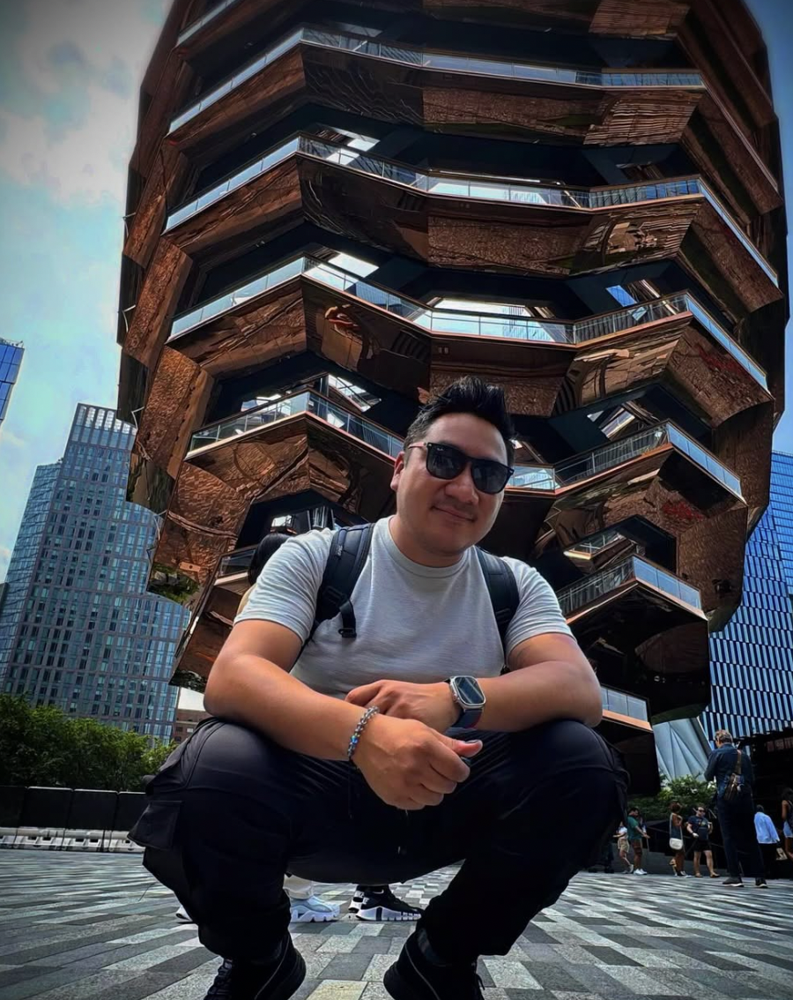

Why to travel is so important?
Benefits of traveling
Why to travel is so important?
Benefits of traveling
Traveling is important because it promotes personal growth by pushing you out of your comfort zone, improves mental and physical health through stress reduction and new experiences, and fosters cultural understanding and a broader worldview by exposing you to different people and ways of life. Travel creates lasting memories, enhances creativity, and can lead to a deeper appreciation for one's own home
Travel is much more than just a physical journey from one location to another. It’s a path to personal growth, cultural understanding, and broadening one’s worldview. Whether for relaxation, education, or business, travel plays a crucial role in enriching lives, fostering human connections, and contributing to global economies. It reminds us of the vastness of the world and our shared humanity, making it an essential part of the human experience. Travel offers a wealth of benefits that go beyond leisure, playing an essential role in shaping our perceptions, skills, and relationships.
Countries
My favorite countries I've visited
FRANCE
France is a top travel destination due to its iconic landmarks like the Eiffel Tower, rich cultural heritage including museums and art, exquisite cuisine and world-renowned wines, and diverse, beautiful landscapes ranging from beaches and mountains to charming countryside villages.
What I like about it
Paris, in particular, is considered the City of Love, offering a romantic atmosphere with beautiful architecture, scenic locations, and the charming Seine River.
CANADA
Canada is a top travel destination due to its vast, diverse landscapes, from the Rocky Mountains to freshwater lakes, offering endless outdoor adventures like hiking, skiing, and whale watching.
What I like about it
Whether you seek high-energy adventure or peaceful relaxation, Canada has something for you, from exciting urban outings to serene wilderness retreats.
JAPAN
Japan combines ancient traditions with futuristic technology, offering world-class cuisine, stunning natural beauty like Mount Fuji and cherry blossoms, rich cultural experiences such as tea ceremonies, diverse modern attractions from anime to high-tech cities, and an incredibly efficient and safe environment for visitors.
What I like about it
The country is known for its polite and hospitable people, contributing to a welcoming and incredibly safe travel experience.